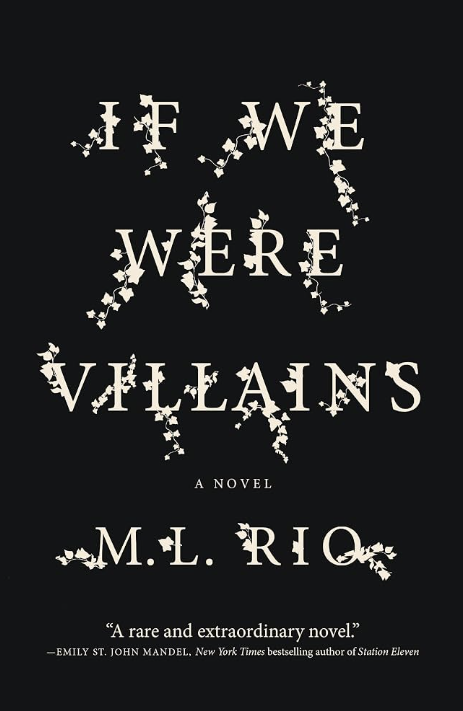
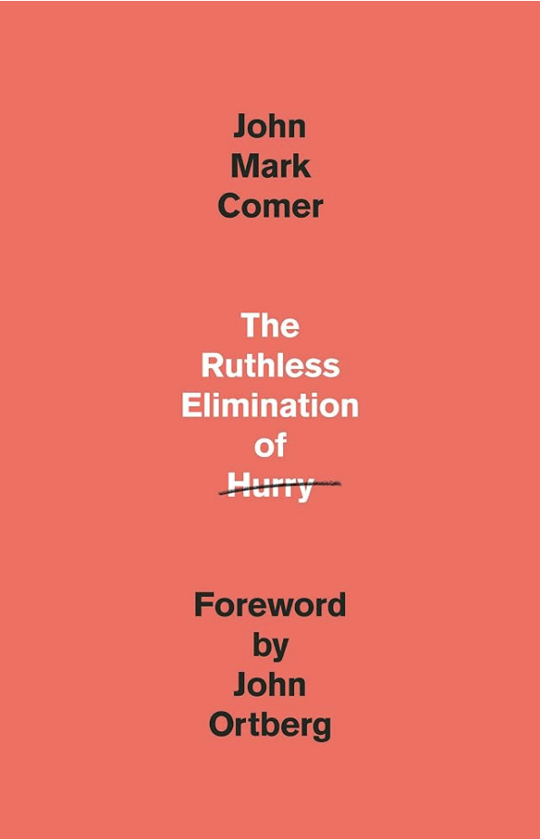
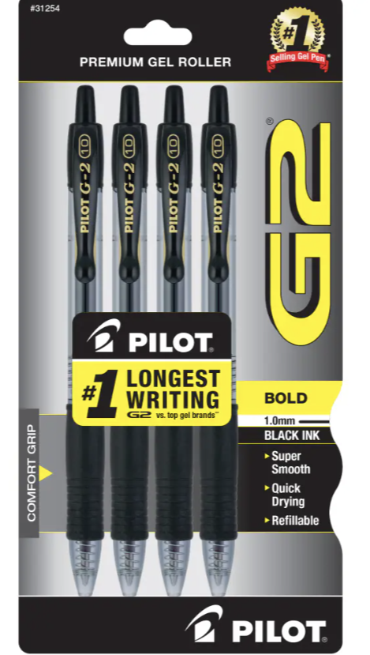

Hobbies
A few things I love outside of cybersecurity.
Reading
I am a mood reader who usually has several books going at once and always has one on me. My reading covers almost every section of the bookstore: fantasy, dystopian, science fiction, contemporary, and general fiction, plus nonfiction on psychology, sociology, AI, society, religion, and history. I also collect Formula One books and writing reference books. My collection has outgrown my shelving space, and my YouTube feed is filled with book content.

If We Were Villains by M. L. Rio
A dark academia thriller about seven acting students at a prestigious conservatory who perform nothing but Shakespeare. When one is found dead, the lines between the roles on stage and who the students really are start to blur. Ten years later, student Oliver Marks is finally ready to tell the truth. I enjoy how Rio makes the characters feel real and distinct from one another, and how the plot weaves together past and present storylines along with the construction of the dark academia backdrop.

The Ruthless Elimination of Hurry by John Mark Comer
A book about how a constantly busy, distracted life crowds out peace, joy, and faith. Comer argues for slowing down on purpose and offers simple practices like silence and solitude, Sabbath, and simplicity to help build a more intentional life. My copy of this book has underlines and notes all over it. This is the book I go back to time and time again when I need a reminder about life in Christ in a world that isn't Christ-centered.
Writing
I started writing during COVID just to try something new, and more than five years later I'm working toward making it a second career. I'm currently working on two projects. One blends nonfiction knowledge about religion with a fiction storytelling style, and the other combines fantasy with dystopian. Everything I know is self-taught through reading and YouTube, and I handwrite almost everything. I love the craft of writing, and I also enjoy learning about the business side of it.
